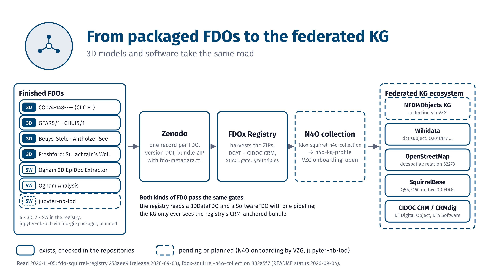

The graphics are generated by pure-Python scripts, see the repository. Transparent PNGs are meant for slides and posters, white 7:4 PNGs are complete talk slides.
FDOx graphics
46 graphics for talks, posters and papers of the FDOx-squirrel family, sorted by topic. Each comes as PNG and SVG with a caption you can copy.
Draft, as of 2026-11-05. The sets on fdo-git-packager, the federated knowledge graph ecosystem and the Ogham graph pictures are drafts and carry a notice on every card.

The four-step pattern and its purpose
Banners and badges for the four FDO steps and the four purposes.
10 graphics

Schemas, architecture and meta graphic
The MD.cff and CITATION.cff schemas, the FDO-Squirrel architecture and the FDO meta graphic.
5 graphics

Talk slides: the process
One slide for each of the four steps.
5 graphics

Talk slides: the purpose
One slide for each of the four purposes.
4 graphics

Talk slides: closing
The closing slides on the FDO sphere and the community hubs.
2 graphics
Draft, as of 2026-11-05

The story: from the FKGE to FDOx
Slides that lead from the federated knowledge graph ecosystem to FDOx, for 3D models and software.
4 graphics
Draft, as of 2026-11-05

fdo-git-packager
Concept graphics for packaging a Git repository as an FDO.
10 graphics
Draft, as of 2026-11-05

Federated knowledge graph ecosystem
Finished 3D and software FDOs in the registry and the N4O collection.
3 graphics
Draft, as of 2026-11-05

Ogham graph pictures
Graph pictures of Ogham stones, their 3D FDOs and the software that uses them.
3 graphics